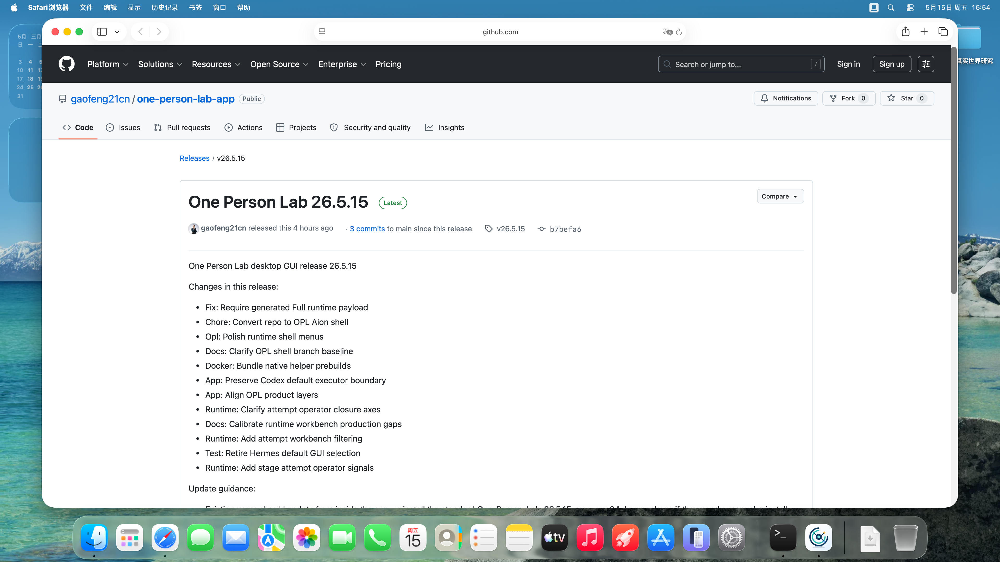
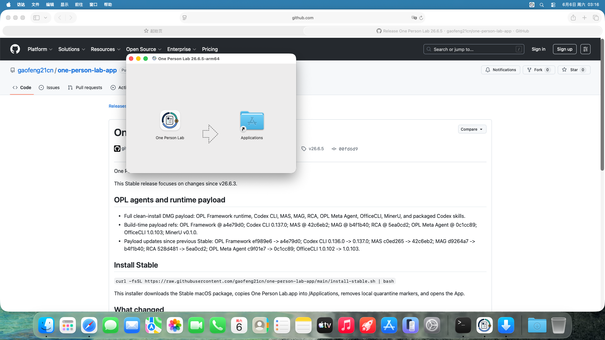
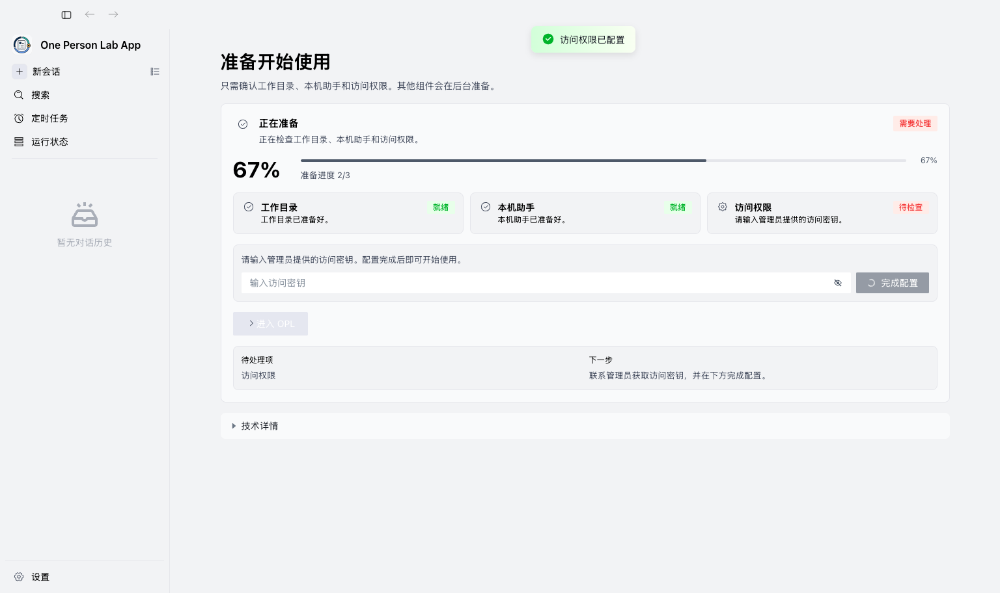
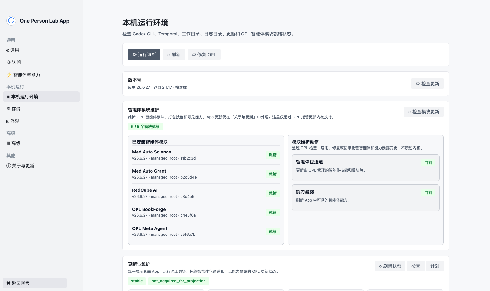

访问权限
涉及访问权限配置时，请联系 gflabtoken 管理员获取访问密钥。不要自行购买、复制来源不明的密钥，或把密钥写入研究数据目录。
准备清单
- 一台 Apple Silicon Mac 或可运行 macOS App 的 Mac。
- 稳定网络，用于下载 One Person Lab 和完成首次环境检查。
- gflabtoken 开通状态；涉及访问权限时请联系 gflabtoken 管理员获取访问密钥。
- 本地研究数据文件夹，数据需完成脱敏并符合本机构数据管理要求。
- 变量说明、纳排标准、终点定义、统计计划、参考文献或已有草稿；可以先放入专病 workspace 的
raw_data/。
1. 下载 One Person Lab
访问 One Person Lab App 最新 Release 页面，下载 macOS Apple Silicon DMG。首次安装或干净机器建议选择 Full 版 DMG。

2. 安装 App
打开 DMG，将 One Person Lab 拖入 Applications。首次打开如出现 macOS 安全提示，按系统提示确认。

3. 配置访问权限
首次启动如果提示访问权限未配置，请联系 gflabtoken 管理员获取访问密钥，并在首启页面完成配置。

4. 等待首次环境检查
OPL 会先检查开始使用所需的关键项：工作目录、本机助手和访问权限。首屏只显示“正在准备 / 可以开始 / 需要处理”的简短状态、三步准备进度、下一步，以及进入 OPL 的主按钮。

5. 进入科研入口
准备完成后，在主界面选择科研入口，进入 Research Foundry / Med Auto Science 工作流。
6. 确认工作目录和运行设置
在本机运行环境中确认工作目录、Codex CLI、Temporal、更新状态和智能体模块。需要调整数据目录或运行设置时，从这里进入。

7. 发起首次科研任务
第一条任务可直接用自然语言描述，让 MAS 先判断研究方向、证据缺口和下一步。

8. 查看进度与结果
任务启动后，重点查看当前阶段、阻塞项、下一步和产物位置。

常见问题
- 下载失败：换网络后重试，或请技术支持人员确认 GitHub Release 是否可访问。
- 打不开 App：优先使用稳定安装命令重新安装；手动安装时确认已拖入 Applications，并按 macOS 安全提示允许打开。
- 访问权限未配置：联系 gflabtoken 管理员获取访问密钥，并在首启页面完成配置。
- 模块未就绪：在 App 的环境管理中重新检查，确认 OPL 完整安装资产与本机网络状态。
- 数据路径看不到：确认选择的是本机可访问的专病 workspace，或能看到其中的
raw_data/。 - 任务启动后不知道看哪里：查看运行状态页的当前阶段、下一步和需要人工确认的项目。
下载附件
面向用户的截图教程，适合 release note 和 onboarding 附件。
从同一 guide source 派生的长文说明。
截图与验证来源
- 截图来自 v26.6.5 的中文 1080p VM guide artifact 与同一次 VM smoke 的 App CDP 截图；PNG 保留各自原始输出尺寸，不做统一画布要求。
- VM smoke 使用真实 DMG 安装到
/Applications/One Person Lab.app；标准版验证 GUID 输入页、Settings 和 MAS/MAG/RCA 入口可用。首启截图和 layout gate 会验证新手首屏保持简化，技术细节默认折叠。 - 每张截图的来源、尺寸和 SHA256 记录在
macos-app-install-assets.json 与生成后的 verification JSON 中。 - Release、DMG、首启日志和模块状态以 App repo contracts / workflow / VM smoke artifacts 为机器真相。
Guide source: docs/user-guides/macos-app-install.guide.json · Screenshot manifest: docs/user-guides/macos-app-install-assets.json